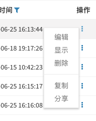
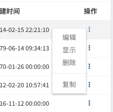
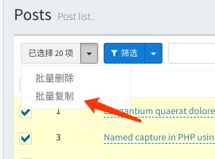
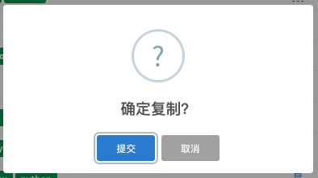
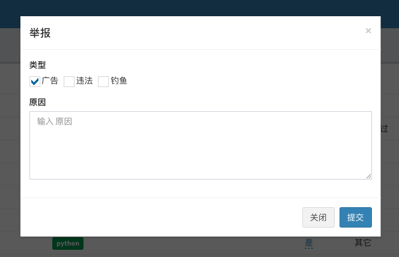
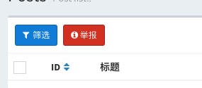
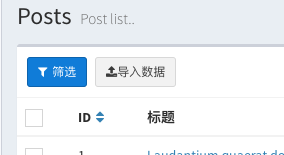
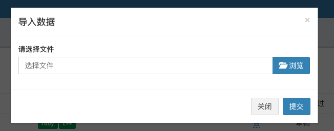
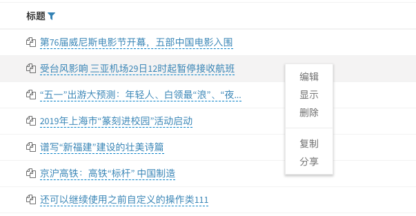

Since v1.7.3
v1.7.3版本对数据表格的行操作和批量操作进行了重构，数据的行操作重构为下拉菜单的形式：

在这种形式下可以更方便的扩展行操作，重构之后的机制可以让你更优雅自定义数据操作。
默认情况下数据表格有3个行操作编辑、查看和删除和一个批量删除操作，参考下面的方式来自定义你的数据操作。
假设你要在文章列表的操作中增加一个复制的操作，点击之后复制这一行的数据，先运行下面的命令生成操作类：
php artisan admin:action Post\\Replicate --grid-row --name="复制"类名称指定为
Post\\Replicate，只是为了把这个操作类放到Post这个命名空间下，可以根据你的模块，指定任何空间。
上面的命令会生成类文件app/Admin/Actions/Post/Replicate.php：
<?php
namespace App\Admin\Actions\Post;
use Encore\Admin\Actions\RowAction;
use Illuminate\Database\Eloquent\Model;
class Replicate extends RowAction
{
public $name = '复制';
public function handle(Model $model)
{
// $model ...
return $this->response()->success('Success message.')->refresh();
}
}操作的提交会被类中的handle方法处理，这里我们只需要简单修改handle方法的逻辑即可：
public function handle(Model $model)
{
// 这里调用模型的`replicate`方法复制数据，再调用`save`方法保存
$model->replicate()->save();
// 返回一个内容为`复制成功`的成功信息，并且刷新页面
return $this->response()->success('复制成功.')->refresh();
}handle方法的第一个参数$model，就是当前这一行的数据的Eloquent模型, 可以直接对这个模型进行操作。
最后一步就是加入到表格中：
use App\Admin\Actions\Post\Replicate;
$grid->actions(function ($actions) {
$actions->add(new Replicate);
});这样就加入到了操作下拉菜单中了：

如果你的行操作只是点击跳转到另外一个页面：
<?php
namespace Encore\Admin\Grid\Actions;
use Encore\Admin\Actions\RowAction;
class Comments extends RowAction
{
public $name = '查看评论';
/**
* @return string
*/
public function href()
{
return "/your/uri/path";
}
}在href方法中可以用$this->getResource()，获取当前的资源根路径，可以用$this->getKey()获取当前行的主键值
假设你还要增加一个批量复制的操作，先运行下面的命令生成批量操作类：
php artisan admin:action Post\\BatchReplicate --grid-batch --name="批量复制"生成类文件app/Admin/Actions/Post/BatchReplicate.php：
<?php
namespace App\Admin\Actions\Post;
use Encore\Admin\Actions\BatchAction;
use Illuminate\Database\Eloquent\Collection;
class BatchReplicate extends BatchAction
{
public $name = '批量复制';
public function handle(Collection $collection)
{
foreach ($collection as $model) {
// ...
}
return $this->response()->success('Success message...')->refresh();
}
}同样我们只需要简单修改handle方法的逻辑即可：
public function handle(Collection $collection)
{
// 对每一个行的数据模型复制
foreach ($collection as $model) {
$model->replicate()->save();
}
// 返回一个`复制成功`的成功信息，并且刷新页面
return $this->response()->success('复制成功.')->refresh();
}加入到批量操作中：
$grid->batchActions(function ($batch) {
$batch->add(new BatchReplicate());
});然后在列表选中几行数据，点开就可以看到新增的批量复制了：

点击操作的时候，经常会需要进行一些确认或者填写额外的数据，可以有下面两种方式来实现互动：
比如上面的复制操作，点击之后需要弹出一个对话框来进行确认操作，在类中增加一个dialog方法即可：
public function dialog()
{
$this->confirm('确定复制？');
}这样，点击复制之后，就会弹出下面的确认框，确认之后，操作才会提交。

假设话题列表有一个举报的操作，点击之后需要弹出一个表单，填写举报的类型和原因，参考下面的方法：
在操作类中加入下面的代码：
public function form()
{
$type = [
1 => '广告',
2 => '违法',
3 => '钓鱼',
];
$this->checkbox('type', '类型')->options($type);
$this->textarea('reason', '原因')->rules('required');
}点击操作的时候，就会弹出一个form表单:

在handle方法中，我们要增加第二个参数来获取表单值：
use Illuminate\Http\Request;
public function handle(Model $model, Request $request)
{
// 获取到表单中的`type`值
$request->get('type');
// 获取表单中的`reason`值
$request->get('reason');
// 你的举报逻辑...
return $this->response()->success('举报已提交')->refresh();
}目前表单支持的方法参考：
public function form()
{
// 文本输入框
$this->text('name', 'Placeholder...')->rules('required|min:10');
// Email输入框
$this->email('name', 'Placeholder...');
// IP输入框
$this->ip('name', 'Placeholder...');
// URL输入框
$this->url('name', 'Placeholder...');
// 密码输入框
$this->password('name', 'Placeholder...');
// 手机号输入框
$this->mobile('name', 'Placeholder...');
// 文本域输入框
$this->textarea('name', 'Placeholder...');
// 单选框
$this->select('name', 'Placeholder...')->options([]);
// 多选框
$this->multipleSelect('name', 'Placeholder...')->options([]);
// Checkbox
$this->checkbox('name', 'Placeholder...')->options([]);
// Radio
$this->radio('name', 'Placeholder...')->options([]);
// 上传文件
$this->file('name', 'Placeholder...');
// 上传图片
$this->image('name', 'Placeholder...');
// 时间日期选择
$this->datetime('name', 'Placeholder...');
// 日期选择
$this->date('name', 'Placeholder...');
// 时间选择
$this->time('name', 'Placeholder...');
// 隐藏
$this->hidden('name');
}自定义操作，除了可以显示在数据表格的操作列和批量操作的下拉菜单中，还可以显示在表格的工具区域中（筛选按钮这一行）
如果你想把批量操作的按钮放到工具区域而不是批量操作的下拉菜单中，需要对操作类做一些修改：
<?php
namespace App\Admin\Actions\Post;
use Encore\Admin\Actions\BatchAction;
use Illuminate\Database\Eloquent\Collection;
use Illuminate\Http\Request;
class ReportPost extends BatchAction
{
protected $selector = '.report-posts';
public function handle(Collection $collection, Request $request)
{
foreach ($collection as $model) {
//
}
return $this->response()->success('举报已提交！')->refresh();
}
public function form()
{
$this->checkbox('type', '类型')->options([]);
$this->textarea('reason', '原因')->rules('required');
}
public function html()
{
return "<a class='report-posts btn btn-sm btn-danger'><i class='fa fa-info-circle'></i>举报</a>";
}
}$selector的值为对应html方法中的按钮CSS选择器，点击举报按钮提交操作。
然后加入到表格的工具条中：
$grid->tools(function (Grid\Tools $tools) {
$tools->append(new ReportPost());
});显示效果如下：

假设你需要在表格头部加入一个导入数据按钮，点击之后弹出表单上传文件进行数据的导入，参考下面的步骤。
运行下面的命令创建一个普通操作类：
php artisan admin:action Post\\ImportPost --name="导入数据"生成的类文件app/Admin/Actions/Post/ImportPost.php：
<?php
namespace App\Admin\Actions\Post;
use Encore\Admin\Actions\Action;
use Illuminate\Http\Request;
class ImportPost extends Action
{
protected $selector = '.import-post';
public function handle(Request $request)
{
// $request ...
return $this->response()->success('Success message...')->refresh();
}
public function html()
{
return <<<HTML
<a class="btn btn-sm btn-default import-post">导入数据</a>
HTML;
}
}修改这个类，提供上传文件的功能，并加上处理数据的逻辑：
<?php
namespace App\Admin\Actions\Post;
use Encore\Admin\Actions\Action;
use Illuminate\Http\Request;
class ImportPost extends Action
{
public $name = '导入数据';
protected $selector = '.import-post';
public function handle(Request $request)
{
// 下面的代码获取到上传的文件，然后使用`maatwebsite/excel`等包来处理上传你的文件，保存到数据库
$request->file('file');
return $this->response()->success('导入完成！')->refresh();
}
public function form()
{
$this->file('file', '请选择文件');
}
public function html()
{
return <<<HTML
<a class="btn btn-sm btn-default import-post"><i class="fa fa-upload"></i>导入数据</a>
HTML;
}
}

下面是一个最简单的返回示例：
return $this->response()->success('Success！');操作类处理完成之后，返回一个Success！的成功提示，下面是几个其它类型的返回：
// 处理错误
try {
// 处理逻辑...
return $this->response()->success('成功...');
} catch (Exception $e) {
return $this->response()->error('产生错误：'.$e->getMessage());
}
// 返回提示信息
return $this->response()->info('提示信息...');
// 返回警告信息
return $this->response()->warning('警告信息...');返回之后刷新页面：
return $this->response()->success('Success！')->refresh();返回之后跳转到其它页面：
return $this->response()->success('Success！')->redirect('/admin/users');返回之后下载文件：
return $this->response()->success('Success！')->download('http://www.xxx.com/file.zip');提示信息默认显示在顶部中间位置topCenter, 可以用下面的方式修改它的显示位置：
// 显示在顶部右边
return $this->response()->topRight()->success('Success！')->refresh();
// 显示在底部中间
return $this->response()->bottomCenter()->error('Error！')->refresh();显示位置的控制方法有topCenter, topLeft, topRight, bottomLeft, bottomCenter, bottomRight, topFullWidth, bottomFullWidth。
提示信息默认显示5秒后自动消失，可以通过timeout方法控制消失时间：
// 3秒之后消失
return $this->response()->success('Success！')->timeout(3000)->refresh();Since v1.7.6
如果需要在操作提交之后，并且被处理之前做权限判断控制，参考下面的方式在操作类中增加一个authorize方法：
public function authorize($user, $model)
{
return false;
}第一个参数为当前操作用户模型，第二个参数为当前列的数据模型或者模型集合，authorize方法通过返回true或者false来控制要不要中断操作的执行。
也可以通过在模型中定义actionAuthorize方法来控制权限, 通过传入的操作类名，来控制操作权限
use Encore\Admin\Grid\Actions\Delete;
class Post extends Model
{
public actionAuthorize($user, $actionClass)
{
if ($actionClass == Delete::class) {
...
return false;
}
return true;
}
}

如上图所示，列表的操作通过右键菜单的形式展开, 开启方式:
在指定页面开启：
use Encore\Admin\Grid\Displayers\ContextMenuActions;
$grid->setActionClass(ContextMenuActions::class);或者在config/admin.php添加配置全局开启：
'grid_action_class' => \Encore\Admin\Grid\Displayers\ContextMenuActions::class,如果是从低版本更新到v1.7.3及以上的版本，还可以继续使用之前自定义的操作类，但是如果要使用新版本的行操作，可以在config/admin.php添加配置全局开启：
'grid_action_class' => \Encore\Admin\Grid\Displayers\DropdownActions::class,或者在每个表格中单独开启：
use Encore\Admin\Grid\Displayers\DropdownActions;
$grid->setActionClass(DropdownActions::class);目前表格的操作列支持三种形式的操作按钮，图标按钮、下拉菜单、右键菜单，图标按钮是最原始的按钮形式，另外两个是在v1.7版本之后新增的，目的是方便自定义更多的行操作。
如果你想切换这三种形式，可以使用下面的方法。
在config/admin.php中配置：
// 最原始的`按钮图标`形式
'grid_action_class' => \Encore\Admin\Grid\Displayers\Actions::class,
// 使用`下拉菜单`形式
'grid_action_class' => \Encore\Admin\Grid\Displayers\DropdownActions::class,
// 使用`右键菜单`形式
'grid_action_class' => \Encore\Admin\Grid\Displayers\ContextMenuActions::class,
也可以给每一个表格指定不同的形式
use Encore\Admin\Grid\Displayers\Actions;
use Encore\Admin\Grid\Displayers\DropdownActions;
use Encore\Admin\Grid\Displayers\ContextMenuActions;
// 最原始的`按钮图标`形式
$grid->setActionClass(Actions::class);
// 使用`下拉菜单`形式
$grid->setActionClass(DropdownActions::class);
// 使用`右键菜单`形式
$grid->setActionClass(ContextMenuActions::class);